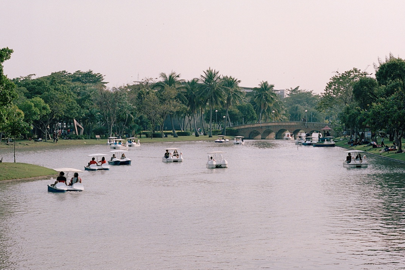

Koh Samui sandbox approved
Published on Jan 14
From December 22nd 2021, Thailand has canceled their Test & Go program meaning all tourists travel by air need to enter the Kindom via Phuket Sandbox or complete the mandatory quarantine of 7 days for fully vaccinated tourists.
Luckily, Thailand has decided to open more destinations for their sandbox program. One of them includes the beautiful paradise island "Koh Samui".
Read more.
PM2.5 worsen during Chinese New Year
More burning during Chinese New Year and the cold air in January are the perfect combination of the beginning of Bankokians' lung cancer journey
Read more.
Bangkok plans to remove mass electric cable on pole in 2059
Bangkok surely does not want to loose its chaotic charm. We can talk about safety later because the cables have been there forever and no one dies so far (or noone knows).
Read more.

Social distancing applies in water
No exceptions, tourists renting paddle boats are to keep distance from others. Yet visiting public parks and rent a paddle boat are still worth it.
Read more.
Bangkok nightlife without tourists
2022 for Bangkok is just 2020 part II, the country's vaccination rate is still not as expected making its people worried about welcoming tourists back in to Thailand.
Read more.
City trains are for rich people
Public transportation should not be too expensive. Bangkokians complain the Bangkok City Train fares are not in line with the minimum wage.
Read more.
Newspapers are dying
With the rise of online news, the newspapers are dying. Sadly some people believe social media posts from random people are trustworthy-online news.
Read more.
Monsoon arrives too soon
Heavy rains start hitting bangkok in January. Good news is that it helps clear the PM2.5 and make it easier for Bangkokians to breath for once.
Read more.
Confusion around Thailand Pass
There is still conflicting imformation on the internet. The Thai authorities suggest anyone wishing to enter Thailand contact the Thai Embassy in their home countries for correct information.
Read more.